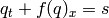

PyBLAW Reference
There are a few things to keep in mind:
- each class has an allocate method that gets called by the solver
during initialisation;
- each class has a pre_run method that gets called after the
initial conditions are computed;
- each class has a debug method that may be used for debugging
purposes (if running with -O)
- each class has trace variable to help you debug your solver; and
- some classes are linked together through various instance
variables (eg, the flux class has a system variable that points
to the system class).
Again, checking out some examples might be helpful.
Base
-
class pyblaw.base.Base
Base class.
Instance variables
Methods that can be overridden
- allocate - allocate memory etc
- pre_run - pre run initialisation
- debug - debug
Methods
-
allocate()
- Allocate storage space etc.
-
debug(**kwargs)
- Perform any debugging checks (assertions) or display
debugging information (this is called by the various PyBLAW
classes after, eg, computing the flux).
-
pre_run(**kwargs)
- Perform any last minute initialisations (this is called by
the solver after the initial condtions have been set).
System
-
class pyblaw.system.System(parameters={}, **kwargs)
Abstract system.
Define initial conditions, abstract mass, and other parameters.
Instance variables
- p - number of unknowns
- parameters - parameters (dictionary)
Instrance variables pulled from elsewhere
Methods that should be overridden
- allocate - allocate memory
- initial_conditions - set initial condtions at time t
- mass - compute ‘mass’ of system
- diagnostics - diagnose solution
Methods
-
diagnostics(q)
- Display/perform diagnostics given q.
-
initial_conditions(t, q)
- Initialise q.
-
mass(q)
- Compute ‘mass’ of q.
-
class pyblaw.system.SimpleSystem(q0, parameters={})
Simple system.
The class implements a simple system that holds a dictionary of
parameters and a callable q0 for the initial conditions.
Arguments
- q0 - initial condition (callable)
- parameters - parameters (dictionary)
The initial condition function is called as q0(x, t) where
x and t are real numbers, and should return a vector. The
number of components p is determined by calling q0.
The first component of the solution is taken to be the ‘mass’
of the system.
Flux
-
class pyblaw.flux.Flux
Abstract flux.
Compute the net flux for each cell given the cell averages q.
Instance variables pulled from elsewhere
- grid - pyblaw.grid.Grid
- system - pyblaw.system.System
- reconstructor - pyblaw.system.Reconstructor
Methods that should be overridden
- allocate - allocate memory etc
- flux - compute net fluxes
Methods
-
flux(qm, qp, f, **kwargs)
- Return net flux for each cell given the left (-) and right
(+) reconstructions qm and qp, and store the result in
f.
-
class pyblaw.flux.SimpleFlux(flux, **kwargs)
Simple numerical flux.
This flux uses a user supplied numerical flux.
Implementing the flux function in Cython (or similar) is
strongly recommended.
Arguments:
- flux - flux function (callable)
The numerical flux function is called as flux(qm, qp, dx, f,
**kwargs) where:
- qm[i,:] and qp[i,:] are the reconstructions of q at
the cell boundaries from the left (-) and right (+)
respectively;
- dx are the cell sizes;
- f is the resulting flux; and
- kwargs contains:
- n: the current step,
- t: the current time, and
- any entries passed to the solver or set by the reconstructor.
-
class pyblaw.flux.LFFlux(flux, alpha)
Lax-Friedrichs flux.
This flux uses the Lax-Friedrichs numerical flux associated
with a given flux and is implemented in C (clfflux).
Implementing the flux in Cython is strongly recommended.
Arguments:
- flux - flux function (callable)
- alpha - maximum wave speed
The (non-numerical) flux function flux is called as flux(q,
f, **kwargs) where:
- q[i,:] is the state vector of q at the cell boundaries;
- f is the resulting flux; and
- kwargs contains:
- n: the current step,
- t: the current time, and
- any entries passed to the solver or set by the reconstructor.
Source
-
class pyblaw.source.Source
Abstract source.
Compute the source for each cell given the cell averages q.
Instance variables pulled from elsewhere
- grid - pyblaw.grid.Grid
- system - pyblaw.system.System
- reconstructor - pyblaw.reconstructor.Reconstructor
Methods that should be overridden
- allocate - allocate memory etc
- source - compute sources
Methods
-
source(qm, qp, qq, s, **kwargs)
- Return source for each cell given the left (-), right (+),
and quadrature reconstructions qm, qp and qq
respectively, and store the result in s.
-
class pyblaw.source.SimpleSource(source)
Simple numerical source.
This source uses a user supplied numerical source.
Arguments
- source - source function (callable)
The source function is called as source(qm, qp, qq, dx, s,
**kwargs) where:
Implementing the source function in Cython (or similar) is
strongly recommended.
Reconstructor
-
class pyblaw.reconstructor.Reconstructor
Abstract reconstructor.
Given the cell averages q, reconstruct the unkown at various
points.
Instance variables
- n - number of quadrature points per cell (for source)
Instance variables pulled from elsewhere
- grid - pyblaw.grid.Grid
- system - pyblaw.system.System
Methods that should be overridden
- allocate - allocate memory etc
- reconstruct - reconstruct
Methods
-
reconstruct(q, qm, qp, qq, **kwargs)
- Reconstruct q at the cell boundaries and quadrature
points, and store the result in qm (-), qp (+), and qq
(quadrature).
-
class pyblaw.wenoclaw.WENOCLAWReconstructor(order=3, cache='cache.mat', format='mat')
WENO CLAW Reconstructor.
Arguments
- order - WENO reconstruction order
- cache - cache file name
- format - cache file format (defaults to ‘mat’)
The pyweno.weno.WENO object is loaded from the cache, which
must be pre-built.
The WENO smoothness indicators and weights are computed for
each component.
Evolver
-
class pyblaw.evolver.Evolver
Abstract evolver (time-stepper).
Evolve the cell averages q given at time t^n to time t^{n+1}.
Instance variables
- t - times
- dt - time step sizes
- grid - grid
- system - system
- reconstructor - reconstructor
- flux - flux
- source - source
Methods that should be overridden
- allocate - allocates memory etc
- evolve - evolve q
Methods
-
allocate()
- Allocate storage space for reconstruction, flux, and source.
-
evolve(q, qn, **kwargs)
- Evolve q and store the result in qn.
-
evolve_homogeneous(q, qn, **kwargs)
- Evolve q (no source) and store the result in qn.
-
reconstruct_and_compute_flux(q, **kwargs)
- Helper function to reconstruct and compute the flux while
updating the keyword argument dictionary.
-
reconstruct_and_compute_flux_and_source(q, **kwargs)
- Helper function to reconstruct and compute the flux and
source while updating the keyword argument dictionary.
-
set_times(times)
- Set times at which the solution is computed to times and
compute time step sizes.
-
class pyblaw.evolver.FE
- Forward-Euler evolver.
-
class pyblaw.evolver.SSPERK3
- Strong stability-conserving explicit three-stage Runge-Kutta evolver.
Dumper
-
class pyblaw.dumper.Dumper
Abstract dumper.
Dump the cell averages q to a file.
Instance variables
- x - cell centers
- t - times
Methods that should be overridden
- init_dump - init and create dump file etc
- dump - dump solution q
Methods
-
dump(q)
- Dump q.
-
init_dump()
- Initialise dumper instance, create dump file, etc.
-
class pyblaw.dumper.MATDumper(output='output.mat')
MAT dumper (using SciPy).
Dump the cell averages q to a MAT file. The matrices created
within the MAT file are:
- dims.xdim - cell centres
- dims.tdim - dump times
- parameters.X - parameters
- data.q - cell averages of solution q
The parameters are taken from the system (pyblaw.system.System).
Note: The H5Dumper in pyblaw.h5dumper is much more efficient.
Arguments
- output - output file name
-
class pyblaw.h5dumper.H5PYDumper(output='output.h5')
HDF5 dumper (using the h5py Python package).
Dump the cell averages q to an HDF5 file. The hierarchy
created within the HDF5 file is:
- /dims/xdim - cell centres
- /dims/tdim - dump times
- /parameters/X - parameters
- /data/q - cell averages of solution q
The parameters are taken from the system (pyblaw.system.System).
Arguments
- output - output file name
Solver
-
class pyblaw.solver.Solver(grid=None, system=None, reconstructor=None, evolver=None, flux=None, source=None, dumper=None, dump_times=None, diagnostic_times=None, times=[], **kwargs)
Solver for 1D systems of balance laws.
Numerically approximates the solution of a system of hyperbolic
balance laws of the form
.
The PyBLAW System, Flux, Source, and Evolver classes should be
extended to define the system, compute the flux, compute the
source terms, and evolve the system.
The constructor takes care of connecting the PyBLAW classes
that you have extended (as mentioned in the previous paragraph)
and calling their allocate and pre_run methods.
Keyword arguments
- grid - pyblaw.grid.Grid
- system - pyblaw.system.System
- reconstructor - pyblaw.system.Reconstructor
- flux - pyblaw.flux.Flux
- source - pyblaw.source.Source
- evolver - pyblaw.evolver.Evolver
- dumper - pyblaw.dumper.Dumper
- dump_times - dump times
- times - times
Instance variables
- t - times
- dt - time steps
- t_dump - dump times
Instance variables pulled from elsewhere
- N - number of cells
- x - cell boundaries
- dx - cell sizes
- p - number of unknowns
Methods
-
build_cache(**kwargs)
Pre-compute grid etc and cache.
This method must set self.grid at least.
-
initialise_and_allocate()
Initialise the solver.
Call all allocate methods, set the initial condtions
(defined by system.initial_conditions), call pre-run
hooks.
-
load_cache(**kwargs)
Load grid etc from a cache.
This method must set self.grid at least.
-
run(**kwargs)
Run the solver.
If we are in debugging mode then:
- If the trace level is non-zero, XXX
- If the trace level is positive, XXX
The keyword arguments kwargs are passed on to the
evolver, reconstructor, flux, and source methods.
-
class pyblaw.wenoclaw.WENOCLAWLFSolver(flux={}, order=3, system=None, evolver=None, dumper=None, cache='cache.mat', format='mat', output='output.mat', **kwargs)
WENO conservation law solver using a Lax-Friedrichs flux.
Arguments
- flux - flux dictionary (see below)
- order - WENO reconstruction order
- system - system
- evolver - evolver or None (defaults to pyblaw.evolver.SSPERK3)
- dumper - dumper or None (defaults to pyblaw.dumper.MATDumper)
- times - times
- cache - cache file name (defaults to ‘cache.mat’)
- format - cache file format (defaults to ‘mat’)
- output - output file name (defaults to ‘output.mat’)
The entries of the flux dictionary are:
- flux - a callable (see pyblaw.flux.LFFlux)
- alpha - maximum wave speed for the LF flux